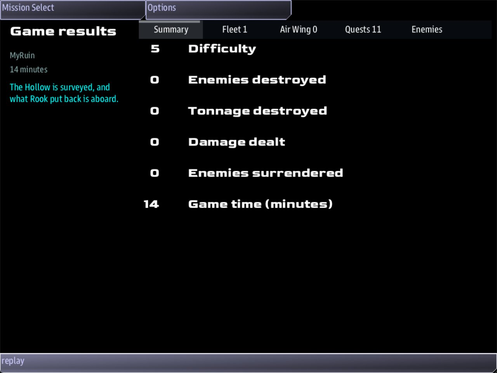

Class 4, Lecture 10 - Capstone: a ruin episode¶
What you will have at the end¶
One episode, from the first line to the last.
It starts at the station, with a job outside. It goes to the door of The Hollow, and in. A crew member reads the altar and finds a clue. The clue pays off at a cairn in a side room. A slab is cut. A niche is opened from the bridge, and the bowl is brought out. The ship carries it home, and the game is won. If forty minutes pass first, it is lost.
Every part of that is something you have already written. Today you join the parts, add one clue chain for the people who go inside, and learn to check an episode from end to end before a crew ever sees it.

The end of the episode: "The Hollow is surveyed, and what Rook put back is aboard."You will add to mission.amd. You will not touch story.mast.
The video¶
About 5 minutes. Subtitles are available in the player.
Before you start¶
MyRuinas Lecture 9 left it.mission.amdis 554 lines long, andstory.mastis Lecture 6's, 116 lines.sbs lint MyRuinsaysclean.- VS Code with the mission folder open, a command prompt open in
C:\Cosmos\data\missions, and the game closed.
Step 1 - The episode on one page¶
Before you change anything, read what you have. This is the whole episode as it will be at the end of today. The last column says where each part was written.
| # | What happens | Where | Who does it | What finishes it | Written in |
|---|---|---|---|---|---|
| 1 | Raise the Mast | DS 1 | A crew member, outside | The game sends mast_repaired |
Lecture 9, and Step 2 today |
| 2 | Find the Way In | The door of The Hollow | Helm | reach hollow_door 1000 |
Lectures 7 and 9 |
| 3 | Rook's recording at the ring | The Ring | Comms | Nothing waits for it. It gives the names | Lecture 6 |
| 4 | The First Marker | The Altar | A suit, or the ship | reach altar 600 |
Lecture 7 |
| 5 | The altar's own scene, and the marks on its rim | The Altar | The crew member there | Step 3 today starts a quest here | Lecture 4, and Step 3 today |
| 6 | Rook's recording at the altar | The Altar | Comms | It reveals The Niche, and for a crew that logged the names, The Cairn | Lectures 4 and 6 |
| 7 | The One Who Stayed, and its cutscene | The Cairn | A suit, or the ship | reach cairn 400 |
Lecture 6 |
| 8 | Forty-One | The Cairn | The crew member there | An answer in the cairn's scene | Step 3 today |
| 9 | Cut Through | The Gallery Door | A crew member, outside | The game sends slab_opened |
Lecture 8 |
| 10 | The Second Marker | The Niche | A suit, or the ship | reach niche 400 |
Lecture 7 |
| 11 | What Rook Put Back | The Niche | Comms, then the crew member | The game sends hollow_taken |
Lectures 5, 7 and 8 |
| 12 | Carry It Home | DS 1 | Helm | reach station 1000 |
Lecture 8 |
Rows 1, 2, 4, 9, 10, 11 and 12 are the story. The game is won when all seven are done. Rows 3, 5, 6, 7 and 8 are what a curious crew finds on the way.
Make a table like this for every episode you write. It is the first thing to draw, before any record. Each row needs something that finishes it, and somebody who can.
Step 2 - The mast is the first step¶
In Lecture 9 the mast was a quest by itself. Now it opens the episode: until the survey antenna works, nobody can hear the markers.
First delete the quest Raise the Mast from the end of your Quests section, from its
### line to the end of its description.
Then find The Hollow Survey. Leave one blank line below its description, the sentence
that ends You have forty minutes., and type:
#### [Raise the Mast](mast_up)
---
Scope: shared
Starts when: at once
Objective: Go outside at DS 1 and mend the survey mast
Done when: signal mast_repaired
Reward: 40 credits
Then: reveal survey/door
Part of: survey
Required: true
---
 Orders from DS 1, the station you started at.
The station's survey antenna is dead. Until it is mended, nobody can hear the markers in The Hollow.
-  Suit up while the ship is near DS 1
-  Fly the suit round the hull to the mast, and mend it with the beam
It is the same quest, with four hashes and three more lines: Then:, Part of: and
Required:. Its lead line and its list are Lecture 9's. Only the paragraph between them
has changed: it now says why the mast comes first.
Then change one line in Find the Way In. It is no longer the first step, so it waits to be revealed:
The key of the new step is mast_up, and the key of the job is still mast. The word the
game sends is made from the JOB's key: mast_repaired.
Step 3 - A clue chain for the crew who go inside¶
Lecture 6 gave the SHIP a clue chain: Comms logs the names at the ring, and a later call
offers one more answer. This is the same idea for a crew member in a suit, written with
the same two words: ; learn on an answer, and if learned >= 1 on a later one.
The chain: read the marks on the altar, then count the stones of the cairn against them.
The quest. Find The One Who Stayed in your Quests section. Leave one blank line below its description, and type:
### [Forty-One](forty_one)
---
Scope: shared
Starts when: revealed
Objective: Find out what the tally on the altar was counting
Done when: signal count_matched
Reward: 80 credits
---
Somebody cut marks into the rim of the altar, in sets of five. Find out what they were counting.
| The marks | What the crew knows |
|---|---|
| How many | Forty-one. Eight sets of five, and one on its own |
| Who cut them | Nobody has said |
Whoever kept the count kept it for a long time, and then stopped.
The table is what the crew knows when the quest appears: the count, and that nobody has said whose it was. It hands them the number without the answer.
The first link. In the Dialogue section, find At the Altar, the scene from Lecture 4. Change its first answer:
learn tally writes a fact down. accepts forty_one starts the quest. Both are from
Lecture 6, and both work in a place's scene the same as in a call.
The place. In the Relics section, add two lines to the fence of The Cairn:
### [The Cairn](cairn)
---
Relic: hollow
Point: 5200, 0, 0
Roles: cairn
Hidden: yes
Dress: plain_asteroid_9 0.4
Scene: cairn_look
Scan: A cairn of flat stones, laid by hand. Somebody is under it.
---
A pile of stones in the middle of the Crypt.
The second link. In the Dialogue section, find The Marks, the last of your place scenes. Leave one blank line below its answer, and type:
### [At the Cairn](cairn_look)
% A pile of flat stones, taller than a person, in the middle of the room. Each one was carried here.
- [Count the stones against the tally](cairn_count) if learned >= 1
- [Leave her be]()
### [The Count](cairn_count)
% Forty-one stones. Forty-one marks on the rim of the altar. They stayed with her as long as they could.
- [Log it]() ; signal count_matched
A crew member who read the marks is offered Count the stones against the tally. One who did not sees only Leave her be.
Two rules from Lecture 4 still hold. Every path through a place's scene ends in an answer with empty round brackets. And a place's scene plays once, for the first suit that arrives.
Whose list a fact goes on¶
There are two lists, and which one a word goes on depends on who gave the answer.
| The answer is given | The word goes on |
|---|---|
| In a call, by Comms on the bridge | The game's own list. It is kept for the whole game, wherever the ship goes |
| In a place's scene, by a crew member in a suit | The ruin's list |
A question reads them like this:
| The question | Where it is asked | What it reads |
|---|---|---|
if learned >= 1 |
In a call | The count of the game's list |
if learned >= 1 |
In a place's scene | The count of the ruin's list, and nothing else |
if learned tally, a word by name |
In a place's scene | That one word, on the ruin's list and then on the game's |
In the walk of this episode, the names Comms logged at the ring went on the game's list, and the tally a crew member read at the altar went on The Hollow's. Two things were then tried on the cairn's answer.
- Written
if learned names, it was offered. A word Comms heard on the bridge opened an answer for the crew member standing at the cairn. - Written
if learned >= 2, it was not offered, although the crew knew two things. The count at a place is the ruin's alone, and the ruin's list held one word.
So the bridge and the people outside can build one chain between them, as long as the link is asked for by name.
Your finished pieces¶
In the Quests section, below The One Who Stayed:
### [Forty-One](forty_one)
---
Scope: shared
Starts when: revealed
Objective: Find out what the tally on the altar was counting
Done when: signal count_matched
Reward: 80 credits
---
Somebody cut marks into the rim of the altar, in sets of five. Find out what they were counting.
| The marks | What the crew knows |
|---|---|
| How many | Forty-one. Eight sets of five, and one on its own |
| Who cut them | Nobody has said |
Whoever kept the count kept it for a long time, and then stopped.
The first two steps of the arc:
#### [Raise the Mast](mast_up)
---
Scope: shared
Starts when: at once
Objective: Go outside at DS 1 and mend the survey mast
Done when: signal mast_repaired
Reward: 40 credits
Then: reveal survey/door
Part of: survey
Required: true
---
 Orders from DS 1, the station you started at.
The station's survey antenna is dead. Until it is mended, nobody can hear the markers in The Hollow.
-  Suit up while the ship is near DS 1
-  Fly the suit round the hull to the mast, and mend it with the beam
#### [Find the Way In](door)
---
Scope: shared
Starts when: revealed
Objective: Bring the ship to the mouth of The Hollow
Done when: reach hollow_door 1000
Reward: 50 credits
Then: reveal survey/first
Part of: survey
Required: true
---
The Hollow has one door. Start there.
In the Dialogue section, the place scenes:
### [At the Altar](altar_look)
% A stone table, one piece with the floor. Its top is worn into a shallow bowl, and the bowl is empty.
% The table is cut from the floor of the room. Something sat in the bowl on top of it for a very long time.
- [Read the marks on the rim](altar_marks) ; learn tally, accepts forty_one
- [Leave it alone]()
### [The Marks](altar_marks)
% Tally marks, in sets of five. Somebody counted days here, and then stopped.
- [Step back]()
### [At the Cairn](cairn_look)
% A pile of flat stones, taller than a person, in the middle of the room. Each one was carried here.
- [Count the stones against the tally](cairn_count) if learned >= 1
- [Leave her be]()
### [The Count](cairn_count)
% Forty-one stones. Forty-one marks on the rim of the altar. They stayed with her as long as they could.
- [Log it]() ; signal count_matched
The whole file is in example\mission.amd. It is 587 lines long.
Step 4 - Check it with lint¶
You want clean under mission.amd.
Lint names every mistake in the first table. The word in the last column is at the end of the line lint prints.
| Mistake | What the game does | Lint says |
|---|---|---|
### [Raise the Mast](mast_up) (three hashes on the new step) |
The mast becomes a story of its own, and the six steps below it become ITS steps. The Hollow Survey has no steps at all | dangling-reveal, six times |
No Then: reveal survey/door on Raise the Mast |
The mast is mended and pays. Find the Way In never appears, and the game cannot be won | never-revealed |
; learn tally, accepts fourty_one (the quest misspelled) |
Reading the marks starts nothing, and Forty-One never appears. A line in mast.runtime.log says nobody holds fourty_one |
outcome-quest-missing, and never-revealed |
No accepts on the altar's answer |
The marks are read and the count is logged. Forty-One never appears and never pays | never-revealed |
No ; signal count_matched on Log it |
Forty-One starts when the marks are read, and never finishes | unfired-signal |
What lint cannot see¶
Lint says clean for everything in this table.
| You wrote | What happens | What tells you |
|---|---|---|
Find the Way In left at Starts when: at once |
Two first steps. A crew can fly to The Hollow and finish the way in before the mast is touched | The quest list has two steps at the start |
| Lecture 9's quest Raise the Mast kept, beside the new step | Both finish when the mast is mended, and both pay: 80 where the table says 40 | The credits in your walk |
Scene: cairn_look left off The Cairn |
A suit that arrives at the cairn reads its Scan: line and is offered nothing. Forty-One starts at the altar and can never finish |
Nothing |
| Nothing wrong: the crew flies to The Hollow first | Nothing happens at the door. Find the Way In is still asleep. It finishes when the ship comes back to the door after the mast is mended | The quest list |
| Nothing wrong: the crew member never reads the marks | At the cairn there is one answer, Leave her be. Forty-One never starts | That is the story working |
One thing that looks right and is not:
if learned >= 2on the cairn's answer, meant as "the names and the tally". The names are on the game's list and the tally is on the ruin's. The crew member at the cairn is counted against the ruin's list, which has one word, and the answer is never offered. Lint says nothing. Ask for the word from the bridge by name:if learned names.
Step 5 - Check it end to end¶
Lint reads a file. It cannot play an episode. So the last check is a walk: every row of the table in Step 1, in order, with what you expect written down beforehand.
Start the game with a server, a Helm console and a Comms console. The person at Helm is also the one who goes outside.
| # | Do this | This must happen | Credits |
|---|---|---|---|
| 1 | Open the quest list | The Hollow Survey, with one step: Raise the Mast | 0 |
| 2 | Bring the ship within 3000 of DS 1's airlock. Open the Boarding Party app | It names DS 1 Worksite, and offers SUIT UP | 0 |
| 3 | Suit up. Nav: Survey Mast. Fire: beam on Repair: Survey Mast |
Raise the Mast completes. Find the Way In appears | 40 |
| 4 | Come aboard. Fly to The Hollow, to within 1000 of the door | Find the Way In completes. The First Marker appears | 90 |
| 5 | Open the Boarding Party app | It names The Hollow now. Suit up | 90 |
| 6 | Nav: The Ring Plate | Comms has A recording at the ring. Choose Log the names. | 90 |
| 7 | Nav: The Altar | The First Marker completes. Cut Through appears. Comms has A recording at the altar. The altar's scene opens on the suit | 140 |
| 8 | On the suit, choose Read the marks on the rim, then Step back | Forty-One is in the quest list | 140 |
| 9 | On Comms: Play the entry keyed to Dace., Mark the side room., Mark the Gallery. | The Cairn and The Niche join the suit's Nav list. The One Who Stayed is in the quest list | 140 |
| 10 | Nav: The Cairn | The One Who Stayed completes, and the cutscene plays on the main screen. The cairn's scene opens on the suit | 140 |
| 11 | Choose Count the stones against the tally, then Log it | Forty-One completes | 220 |
| 12 | Nav: The Gallery Door. Fire: beam on The Fallen Slab | Cut Through completes. The Second Marker appears | 320 |
| 13 | Nav: The Niche | The Second Marker completes. What Rook Put Back appears. Comms has A second recording | 420 |
| 14 | On Comms: Open the niche. | The bowl is in the niche. The suit takes it. What Rook Put Back completes. Carry It Home appears | 720 |
| 15 | Come aboard. Fly to within 1000 of DS 1 | The game ends with your Win: sentence |
820 |
Then stop the game and open mast.runtime.log. It should be empty.
If any row does not do what the table says, stop there. The row tells you which record to read.
The other ending¶
An episode has two endings, and both need checking. Change Fails when: 40 minutes to
Fails when: 20 seconds, start the game, and sit still. The game ends with your Lose:
sentence. Change it back.
What a walk like this is for¶
Three kinds of fault only a walk finds. Each one is in this class, and each one lints
clean.
| The fault | Where it was | What the walk shows |
|---|---|---|
| A step finishes in the wrong place | Lecture 9: two doors, and reach entrance |
The credits go up a row early |
| A step can never finish | Lecture 8: the bowl taken before the step was listening | A row where nothing happens |
| The game is won too soon | Lectures 7 and 8: Part of: and Required: on some steps and not on the last |
The end screen, rows early |
The credits column is the cheapest check there is. If your number and the table's number differ on any row, something finished that should not have, or something did not.
How this page was checked, and what nobody has done. The walk above was done by a script, with no screen and no person: a stand-in console, the game's own buttons, lists and answers, and the suit put at each place in turn. All fifteen rows did what the table says, and the game was won with 820. Nobody has yet played this episode with people at consoles, and nobody knows how long it takes. That is why the clock is forty minutes, and why the first thing to do with a real crew is time it.
If something goes wrong¶
| What you see | Likely cause |
|---|---|
| The Hollow Survey has no steps under it | The new step has three hashes. Lint warns six times |
| The quest list has two steps at the start | Find the Way In still says Starts when: at once |
| The mast is mended and nothing appears | The step's Then: reveal survey/door is missing or misspelled. Lint names it |
| The mast pays 80 | Lecture 9's quest Raise the Mast is still at the end of the Quests section |
| Reading the marks does not put Forty-One in the list | accepts forty_one is missing or misspelled on the altar's answer. Lint names both |
| The cairn has no Count the stones answer | The crew member did not read the marks. Or ; learn tally is missing from the altar's answer |
| The count is logged and Forty-One does not finish | ; signal count_matched is missing or misspelled on Log it. Lint names it |
| The cairn says nothing to a suit | The Cairn has no Scene: line. Or another suit got there first: a place's scene plays once |
| A row of the walk does what the row before it should have | Read the step named in that row. Its Starts when: or the Then: above it is wrong |
| Anything about the suit, the slab, the bowl or the worksite | Lectures 8 and 9, "If something goes wrong" |
One more thing - a story for one person¶
Class 3, Lecture 5 gave one crew member a story of their own. A ruin can do the same, and
it needs no card. This part is optional. The capstone, its example\ file and the walk
table in Step 5 do not have it.
In mission.amd, find this line:
Above it, leave two blank lines, and type:
// ---- Side stories. A small story for one member of the crew who goes inside.
## [Side Stories](side_stories)
### [The Tally](the_tally)
---
For: comms
Starts when: at once
Objective: Find out what the tally on the altar was counting
Done when: signal count_matched
Reward: 80 credits
---
Somebody cut marks into the rim of the altar, in sets of five. Find out what they were counting.
| Line | What it means |
|---|---|
## [Side Stories](side_stories) |
A section of its own, with exactly this key. The game hands every story in it to the crew who go out to a ruin built from this file |
For: comms |
Whose story it is: a job, as in Class 3, Lecture 5 |
Starts when: at once |
It starts the moment it is handed over |
Done when: signal count_matched |
The word your answer Log it already sends at the cairn |
Reward: 80 credits |
Paid to the ship, as a personal story's reward always is |
Run lint. It says clean. A ruin's own Side Stories are handed out by the game itself,
so there is no card to paste.
This is what the stand-in did, with the Comms officer as the one who suits up at The Hollow:
| Moment | The Tally |
|---|---|
| Before SUIT UP | Nobody has it |
| The moment the Comms officer suits up | It is on that crew member's own list, running |
| Log it, at the cairn | Done. The crew is told Quest complete: The Tally, beside Quest complete: Forty-One, and the ship is paid 80 for each |
If you keep it, your walk ends 80 credits above the table in Step 5.
What this class has not given you¶
Three things you may have expected, and why they are not here.
| You might want | Where it stands |
|---|---|
| Walls that hold the ship in | Off in a template mission, on purpose: a held ship has no way out. Open Universe turns it on, because there a ship leaves by jumping (Class 5) |
| Walls from an art pack | Kits. They need lines in three files, so they are in the library documentation, under "Kits" |
| A scan text of your own on a thing | Not yet. Lecture 5 says what Science reads on a thing |
Exercise¶
This is the class project. Write an episode of your own, in a new mission.
- Make the mission:
sbs create MyEpisode -t amd --title "...", thensbs fetch "MyEpisode" --update-libs. - Draw the table from Step 1 first, on paper. Five to eight rows of story. For each row: where, who, and what finishes it.
- Build the ruin: three or four rooms (Lecture 2), a look (Lecture 3), a place for every row of your table that happens inside.
- Give it a voice: one character, a call at one place (Lecture 4), a scene of its own on two places.
- Put the piece in it (Lecture 5), behind a barrier (Lecture 8), and do not let it exist until the story is ready for it.
- Write the arc (Lecture 7): a step for each row, a
Win:, aLose:and a clock. - Add one clue chain of two links (Lecture 6 for the ship, today for a suit).
- Write the walk table from Step 5 for YOUR episode, with the credits, and walk it.
You are finished when your walk table and your game agree on every row, twice in a row.
Checkpoint¶
You are done when all six are true:
sbs lint MyRuinshowsmission.amdasclean.- At the start, The Hollow Survey has one step, Raise the Mast, and Find the Way In does not appear until the mast is mended.
- A crew member who reads the marks on the altar is offered the count at the cairn, and one who does not is not.
- The walk in Step 5 does what its table says on every row, and ends in a win with 820.
- With
Fails when:set to 20 seconds, sitting still ends the game with yourLose:sentence. mast.runtime.logis empty after both.
Next¶
That is Class 4. Class 5 takes a ruin like yours out of its own small mission and into a whole universe, where a crew can find it, leave it, and come back.
Further reading¶
- "Relic interiors" in the library documentation, from the top. You have now used most of it.
- "Quests" in the library documentation: "Mission tree and end-game".
EPISODE_TEMPLATE.mdin Storm's Beacon: the checklist its own episodes were built from. Read it for the shape. Its spelling of a step is the older one that Lecture 7 warned about.
Download this lecture's finished files (a zip of its example folder).